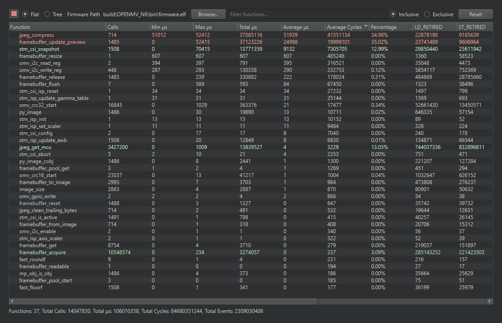

13.1.18. Le profileur de code¶
Window → Show Code Profiler ouvre un profileur au niveau des fonctions pour le micrologiciel exécuté sur la caméra connectée : quelles fonctions C ont été exécutées, à quelle fréquence et où sont passées les microsecondes, le tout diffusé en direct pendant l’exécution d’un script. Il répond à la question que soulève le compteur de FPS – pourquoi ce pipeline est-il lent – au niveau du propre code de la caméra.
La prise en charge du profilage est compilée dans le micrologiciel, et n’est pas toujours présente : la caméra doit exécuter un micrologiciel compilé avec PROFILE_ENABLE=1, sans quoi l’entrée de menu reste désactivée. La compilation d’un tel micrologiciel fait partie du flux de compilation personnalisé décrit dans Compiler le micrologiciel.

Le profileur observant l’exécution d’un script : appels par fonction, chronométrage et pourcentage du temps total, avec deux compteurs d’événements matériels dans les colonnes les plus à droite et la ligne des totaux en dessous.¶
La fenêtre est un tableau triable de fonctions avec leurs nombres d’appels, leurs microsecondes minimales, maximales, totales et moyennes, leur nombre moyen de cycles et leur pourcentage du temps total, avec une ligne des totaux en dessous et une zone de filtrage pour trouver les fonctions par nom. Les noms des fonctions proviennent du fichier ELF du micrologiciel – pointez le champ du chemin du micrologiciel de la fenêtre vers le .elf produit par la compilation, et les adresses se résolvent en noms.
Deux commandes d’affichage organisent les données. Flat classe chaque fonction indépendamment – la vue pour « quelle est la fonction la plus coûteuse à elle seule ». Tree imbrique les appelées sous les appelantes, montrant comment le temps se décompose le long de la chaîne d’appels. Indépendamment, Inclusive impute à une fonction le temps passé dans tout ce qu’elle a appelé, tandis qu”Exclusive ne compte que le corps propre de la fonction – inclusive trouve le sous-système coûteux, exclusive trouve la boucle coûteuse. Reset remet les compteurs à zéro, ce qui vous permet de mesurer une étape d’un pipeline de façon isolée : réinitialisez, laissez s’exécuter, lisez.
Le profileur peut également afficher des compteurs d’événements matériels – défauts de cache, erreurs de prédiction de branchement et les autres événements que le processeur peut compter – à côté des colonnes de chronométrage ; sélectionnez-les dans la même fenêtre sur un micrologiciel compilé avec cette prise en charge.
Voir aussi
Le CLI du paquet openmv peut superposer les mêmes données de profilage sur un flux en direct depuis la ligne de commande – voir L’interface en ligne de commande openmv.